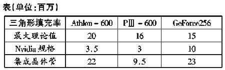

|
|
| 当前位置：电脑报电子版 > 1999 年 > 41 期 > 硬件周刊 > GeForce冲过来 |
| 《 GeForce冲过来 》 |
| GeForce 256给我们留下了深刻印象：它集成的几何转换和光照引擎可以实现每秒处理1500万个全过滤的三角形，经着色引擎处理，每秒可以填充48000万个像素。长久以来，我们一直期望具有高数量多边形的3D游戏出现，现在，Nvidia和游戏开发者有机会实现这个梦想了。 在前几期的《电脑报》上，我们已看到有关对GeForce 256的功能描述，它已不是普通3D图形加速器的概念，而是具有革命性意义的图形处理器，读者朋友可能想对它了解得多一些，下面就是你感兴趣的内容。 图形处理器有什么特点？ 图形处理器(GPU)是一个单芯片，它有一个集成的几何转换和光照处理引擎（T＆L），但不包括以前显示卡上的着色引擎。T＆L引擎的作用是什么呢？要生成3D游戏，程序将首先生成虚拟3D实景，而这个场景中的物品是由许多多边形、矩形和三角形组成的。3D场景必须按透视规则转换，并在平面的显示器上显示。而目前的显示卡，如TNT2 Ultra, G400和Voodoo3，要依靠CPU来做这些转换工作，然后再由显示卡进行纹理贴图工作（即在物体表面着色）。如果在电脑中插上GPU，几何转换和光照处理的工作就可由GPU代替CPU来做，CPU只需向显示卡提供原始的3D坐标信息即可。由于GeForce 256 GPU计算几何转换和光照的时间比PⅢ或Athlon还要快，这就有可能产生具有高质量的3D场景和物品（见图）。目前的3D游戏由于速度上的限制，只能使用较少的多边形来组成3D场景中的物品，如树木、人物等，拉近看时会觉得比较粗糙，特别是人物头部。 在使用大量多边形的任务中，GPU可以减轻CPU的工作量，CPU因而能够腾出更多的时间来处理游戏的情节和人工智能等等。而光照引擎则让游戏中的动态光影更加真实、精密。为了讲得更清楚，下面列出电脑系统中3D图形的处理流程： 第1步：应用程序 应用程序的实质在于拟真度。游戏总是要给人一种真实的感觉，这包括人工智能、真实情况的模拟（比如，当手榴弹扔出去落地后会发生什么情况等）、物体在三维空间中的方向校验等。这部分的计算工作既是整数密集型又是浮点密集型，由CPU完成。 第2步：场景计算 在这一步，程序将决定屏幕上的显示内容。如果一个物体不会被用户（游戏者）看见，那该物体就没有必要被转换。该工作也由CPU完成。 第3步：转换 前面已有叙述，这里不再重复。当场景刷新一次，屏幕上的每个物体都要重新转换一次，如果游戏的流畅度达到每秒30帧，上面的转换工作每秒就要发生30次。 第4步：光照处理 复合光照处理能大幅提高场景的真实度，不过目前大部分飞行游戏使用简单的顶点照明，其他游戏则使用照明贴图。 第5步：三角形设置和修剪 该步是为着色引擎设置三角形，修剪显示边缘。目前这项工作几乎是由显示芯片完成。 第6步：着色 所谓着色，就是为在屏幕上显示的每个像素计算出正确的颜色。 GeForce、Athlon和PentiumⅢ谁更快？ NVidia声称目前120MHz的GeForce 256能够每秒处理1000万个多边形，而且该架构具有处理达到1500万个多边形的能力。这种处理速度可以同目前最快的CPU——Athlon或PⅢ相比吗？PⅢ在使用ISSE单元的情况下，每18个时钟周期可以处理1个简单的顶点，Athlon使用3DNow！单元时需要14个时钟周期。也就是说，600MHz的Athlon每秒可以处理4200万个顶点，理论上大约每秒2000万个三角形（PⅢ就更少一些）。如果再考虑边缘修剪、背面选择、光照处理的话，Athlon的处理能力也就在每秒350万个三角形左右。由于绝大部分游戏没有使用光照处理，所以Geforce256的转换速度不会是目前这些CPU的3倍(见表)，但它的工作频率只有120MHz。CPU的浮点计算能力还有用吗 大家都知道，以往的3D游戏得依靠CPU强大的浮点计算能力，那么，既然Geforce这么强大，CPU就显得无足轻重了吗？事实没有这么简单，虽然目前所有的OPENGL游戏都会立即从T＆L中受益，但DirectX游戏及使用自有几何引擎的游戏还不会从几何加速中受益，希望DirectX 7.0会支持。即使如此，仍有许多浮点密集型任务要靠CPU完成，比如必须把曲面分解成多边形，供几何加速器使用、物理量的模拟等等。现在游戏中的几何转换大约消耗20％～25％的CPU资源，使用Geforce可以在3D游戏中释放这些CPU资源。GeForce会唯我独尊吗？ 目前从新产品的规格上看，只有S3的Savage 2000才是Geforce的竞争对手，因为Savage 2000也有T＆L引擎，尽管S3并没有发表几何引擎的参数，但推测会比Geforce慢，不过也够强悍。这意味着S3也有机会，如果能够按时投放市场，Savage
2000＋会是GeForce的强大竞争对手。由于最近的游戏还不会充分发挥几何引擎的功能，S3的T＆L虽然慢一些，但在实际游戏速度上，两者的差异恐怕并不明显。 
结 语 更真实、具有丰富细节的场景会出现在今后的游戏中，这要感谢nVidia创新的技术。3DFX公司的VOODOO1使3D技术向前迈进了一大步，现在，nVidia的Geforce256又使3D技术向前迈出了第二大步。我们都知道VOODOO1对游戏市场的冲击效应，现在，我们将看到GeForce256带来的新震撼。 |
| 下载本期推荐软件 | 页 首 |
| 《电脑报》版权所有，电脑报网站编辑部设计制作发布 |